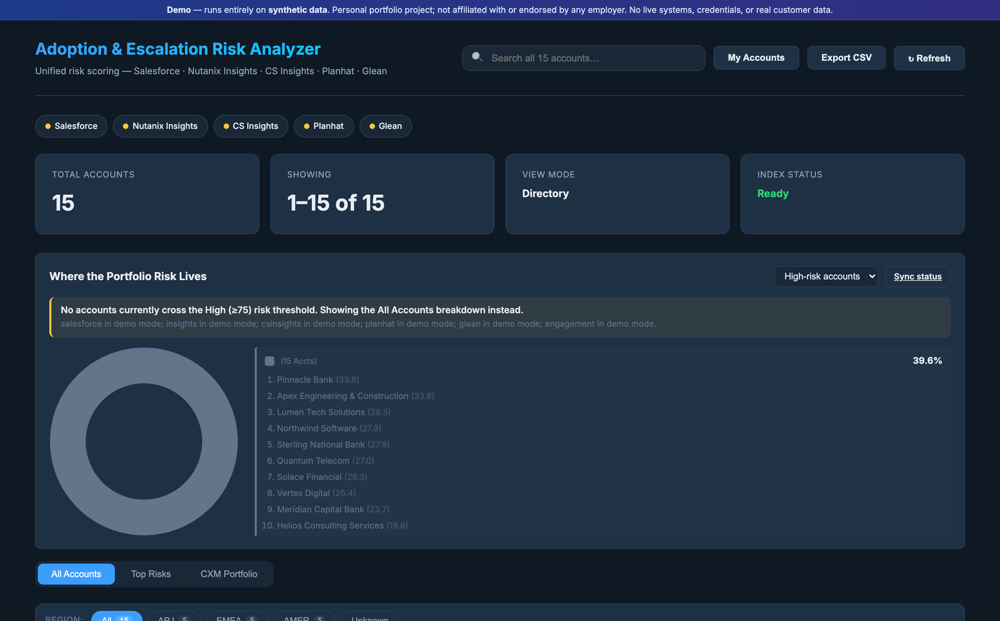
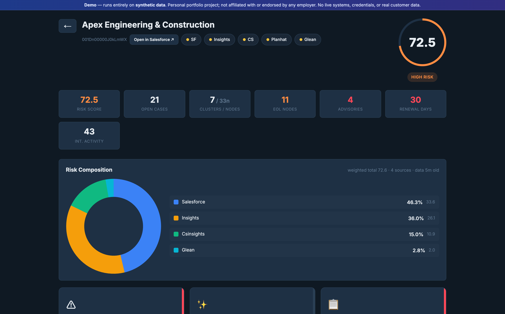
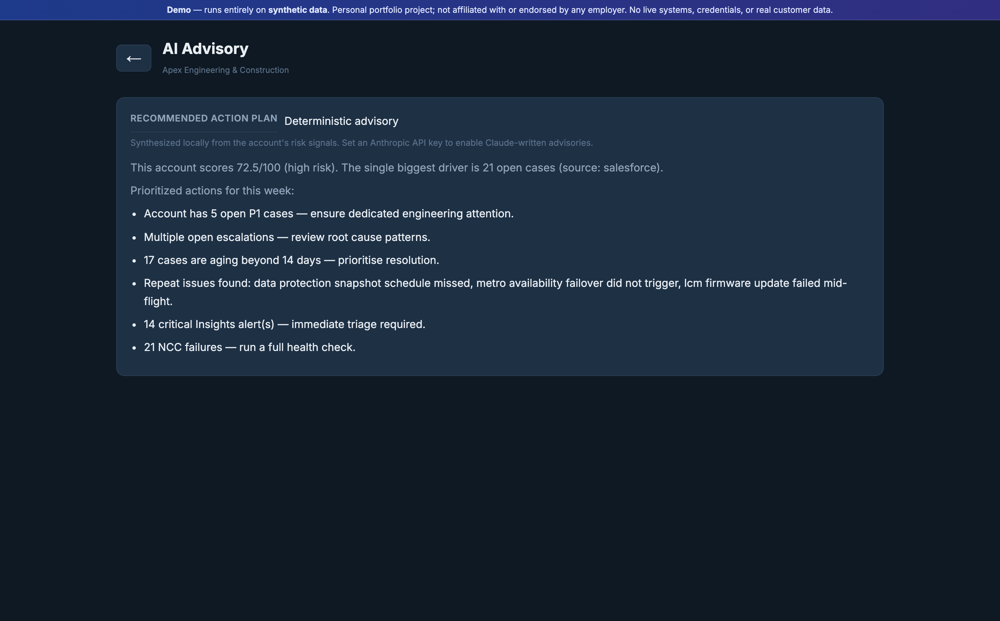

Applied AI · Customer Success
Enterprise Adoption &
Escalation Risk Analyzer
One explainable 0–100 escalation-risk score per customer account — fused from five systems, broken down factor-by-factor, and turned into a Claude-written action plan.
Aritra De · live demo + open source · runs on synthetic data
01
The Problem
Account health hides in five
different systems.
🎫Support
Cases, severities, escalations, aging tickets
🖥Infrastructure
Cluster health, alerts, end-of-life exposure
📊Customer Success
Adoption, health score, sentiment
🕒Renewals
Contract status & renewal proximity
🔍Engagement
Internal touchpoints & escalation chatter
⚠️The result
No single number. Escalations surface too late. Teams triage by gut, not signal.
02
The Solution
One number. Fully explainable.
Immediately actionable.
🎯Unified risk score
A weighted engine merges ~15 signals into one 0–100 escalation-risk score per account.
🧩Full explainability
Every score decomposes into ranked factors with each source's contribution.
✨Claude action plan
A server-side Claude advisory turns the profile into a prioritized weekly plan.
✉️Auto-drafted outreach
Generates the customer email with flagged problems and next steps.
03
How It Works
From scattered signals to a scored,
explained, actionable account.
Connectors
5 source systems
(synthetic in demo)
→
Weighted Scorer
~15 signals →
0–100 score
→
Explainability
factor + source
breakdown
→
Claude Advisory
prioritized
action plan
→
Outreach
drafted
customer email
1 click
to a Claude action plan
04
The Differentiator
No black-box scores.
Every account's score breaks down into ranked, weighted factors — so a Customer Experience Manager sees exactly why an account is at risk and where to look first.
- Score-by-source donut + every weighted factor, charted — support / infra / CS / engagement / manual flags
- Transparent weights, tunable in one file — P1/P2 ratio and escalation history carry the most
- Manual CXM risk flags layer on top — human judgment + the model, not either alone
05
The Claude Layer
A real Claude integration —
built responsibly.
🔒Server-side only
The Anthropic call runs in the backend; the API key never reaches the browser.
👆Explicit & cached
Claude is invoked only on a click, and cached per account — cost stays negligible.
🛟Zero-cost fallback
With no key, a deterministic advisory is synthesized locally — it never breaks.
🎯Grounded
The prompt carries only computed signals — no PII, no invented data.
Cost-aware, graceful, and honest — the engineering values that matter for production LLM systems.
06
Architecture
A clean, deployable ASGI app.
Dashboard — HTML · vanilla JS · Chart.js
Risk table · Portfolio donut · Drill-downs · AI Advisory · Email composer
FastAPI backend
Aggregator · Risk Scorer · Claude Advisor · Email Generator · TTL cache
Connector layer (demo: synthetic generators)
support · infrastructure · CS platform · renewals · internal engagement
Persistence & jobs
SQLite · optional vector store · APScheduler background recompute
07
Tech & What It Demonstrates
Full-stack applied AI, end to end.
PythonFastAPIPydantic v2SQLiteAPSchedulerChart.jsAnthropic Claude APIDockerRender
Data fusion
Merging messy, multi-system signals into one coherent model.
Explainable scoring
Transparent, weighted, factor-level — not a black box.
Safe LLM integration
Server-side, gated, fallback-backed Claude usage.
Full-stack delivery
API, UI, background jobs, persistence, charts.
Cloud deploy
Dockerised, blueprint deploy, keep-alive automation.
Responsible defaults
Synthetic data, no secrets, honest disclaimers.
08
See It Live
Click through the whole flow.



enterprise-adoption-risk-analyzer.onrender.com
Runs entirely on synthetic data — no real customers, credentials, or live systems.
09
About
Literally the Applied AI /
Solutions Architect job — in code.
Aritra De — an enterprise technical, customer-facing operator (10+ years across VMware, Nutanix, Veeam) now building applied-AI systems for Indian BFSI & enterprise.
10